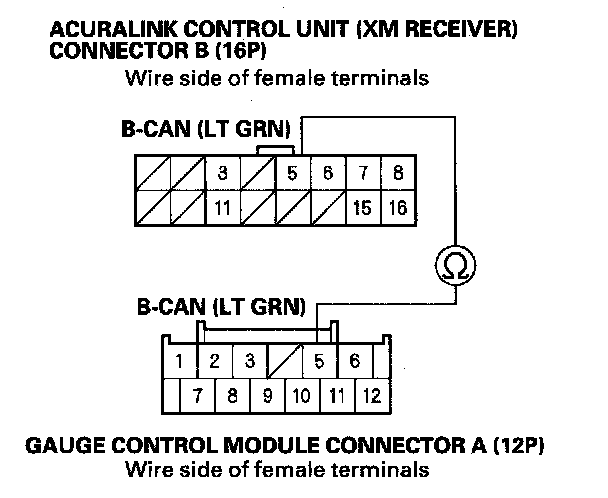

B2204
DTC B2204: B-CAN Communication Line ErrorNOTE: If you are troubleshooting multiple DTCs, be sure to follow the instructions in B-CAN System Diagnosis Test Mode A.
1. Connect the HDS to the DLC.
2. Turn the ignition switch ON (II).
3. Check for DTCs with the HDS and DTC log data in the navigation system diagnostic mode.
Is DTC B2204 indicated with HDS and on the navigation display?
YES - Intermittent failure. B-CAN communication line is OK at this time. Check for poor connections or loose terminals at the AcuraLink control unit (XM receiver).
NO - Go to step 4.
4. Turn the ignition switch OFF.
5. Disconnect the AcuraLink control unit (XM receiver) connector B (16P) and gauge control module connector A (12P).

6. Check for continuity between the AcuraLink control unit (XM receiver) connector B (16P) No. 5 terminal and gauge control module connector A (12P) No. 5 terminal.
Is there continuity?
YES - Check for poor connections or loose terminals at the AcuraLink control unit (XM receiver). If all connections are OK, replace the AcuraLink control unit (XM receiver).
NO - Repair open in the wire between AcuraLink control unit (XM receiver) and the gauge control module.